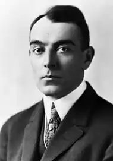

(06.03.1885 — 25.09.1933)
Крім кар'єри письменника, Ларднер пробував себе у ролі сценариста в театрі, проте лише одна з його постановок закінчилася успіхом — це була комедія ‘June Moon'.
Ринг Ларднер (повне ім'я — Ringgold Wilmer Lardner) народився в містечку Найлс (Niles), що на південно-заході озерного штату Мічиган (Michigan), в багатій родині Генрі і Олени Філліпс-Ларднер (Henry Lardner and Lena Phillips Lardner), в якій крім Рингу було вісім дітей. Ім'я Рингголд було обрано невипадково – саме так звали хорошого друга сім'ї, а за сумісництвом адмірала Американської армії, Кадваладера Рингголда (Cadwalader Ringgold), однак самому хлопчику ім'я ніколи не подобалося, і він скоротив його до ‘Ринг'. У 1911-му році Ринг Ларднер одружився на Елліс Ебботт (Ellis Abbott), у цьому шлюбі народилося 4 синів – Джон (John), Джеймс (James), Ринг-мл (Ring Jr.), і Девід (David). Найстарший з них, Джон, згодом повторив кар'єру батька і став письменником. Інший син, Джеймс, був убитий в Іспанській громадянській війні, воюючи у складі інтернаціональної бригади (International Brigades). Третій син, Ринг-молодший, досяг небувалих висот в кіноіндустрії; отримав за свої фільми дві премії ‘Оскар', однак після закінчення Другої світової війни він був включений в ‘чорний список' голлівудських сценаристів. Наймолодший син Рингу, Девід, працював військовим кореспондентом у газеті "The New Yorker", але був убитий в часи Другої світової війни неподалік від міста Аахен, Німеччина (Aachen, Germany). У 1916-му році вийшла перша успішна книга Рінга Ларднера під назвою ‘You Know Me Al'. Сатиричні оповідання були написані від імені Джека Кифа (Jack Keefe), професійного бейсбольного гравця, який пише листа своєму другові додому. Вперше книга вийшла в журналі "The Saturday Evening Post' як шість не пов'язаних між собою історій. Однак з-за величезного успіху публіцисти прийняли рішення зібрати всі розповіді в одну книгу. Після виходу ‘You Know Me Al' популярний журналіст Ендрю Фергюсон (Andrew Ferguson) написав у своїй колонці, що книга, незважаючи на буденність змісту, вийшла дуже навіть непоганий і здобула повагу навіть серед таких ‘серйозних і невеселих людей', як Вірджинія Вулф (Virginia Woolf); згодом журналіст помістив книгу Рингу в список п'яти кращих гумористичних книг світу'. Незважаючи на те, що Ринг так і не став автором жодного роману, він був визнаний одним із кращих авторів Сполучених Штатів. Крім кар'єри письменника, Ларднер пробував себе у ролі сценариста втеатре, проте лише одна з його постановок закінчилася успіхом — це була комедія ‘June Moon'. Проте більшої популярності Ринг домігся все-таки не в театрі, а як спортивний оглядач. Писати спортивні статті він почав ще підлітком, в газеті ‘South Bend Tribune' – так він заробляв кишенькові гроші. У 1907-му році Ларднер переїхав у Чикаго (Chicago), де отримав роботу, мабуть, найгіршою газеті міста, за версією багатьох критиків, ‘Inter-Ocean'; проте менш ніж через рік вже перейшов в газету ‘Chicago Examiner', а після — в ще більш імениту ‘Chicago Tribune'. Через кілька років роботи автор отримав свою власну колонку під назвою ‘In the Wake of the News' (яка, до речі, до сих під виходить). За довгі роки роботи в газеті Ринг найбільше прославився як бейсбольний критик і аналітик. Проте в 1919-му році сталося те, що назавжди змінило його життя, а , особливо, його відданість до бейсболу. Сара Бембри (Sarah Bembrey) згадувала про це так: "У 1919-му році ‘Уайт-Сокс' (Chicago White Sox) програли фінальну серію команді ‘Цинциннаті Редс' (Cincinnati Reds). Після їх поразки бідний Ринг, колишній затятим фанатом команди, занурився в якесь забуття, вийти з якого він так і не зміг". У 1988-му році вийшов фільм ‘Eight Men Out', що розповідає історію поразки ‘Уайт-Сокс' в 1919-му році; у фільмі режисер Джон Сейлз (John Sayles) показав спортивного оглядача як розумного і розуміє людини. Спеціально для фільму була записана кавер-версія пісні ‘i'm Forever Blowing Bubbles', в якій назва, однак, було змінено на ‘i'm Forever Blowing Ballgames', що дослівно перекладається з англійського, як ‘Я завжди продуваю гри'. Останньою роботою Рингу про бейсбол була стаття ‘Lose with a Smile', написана в 1933-му році. У загальній складності у Ларднера вийшло 8 повноцінних книг, а його спортивні статті друкувалися у понад 100 виданнях по всьому світу. Відомо, що творчість журналіста дуже сильно позначилося на ранній манері письма знаменитого письменника Ернеста Хемінгуея (Ernest Hemingway), який навіть написав ряд статей у шкільну газету під псевдонімом Ринг Ларднер-молодший (Ring Lardner, Jr). Ринг Ларднер помер 25 вересня 1933-го року в Нью-Йорку (New-York), від ускладнень туберкульозу. На той момент відомому журналісту і письменнику було всього 48 років.